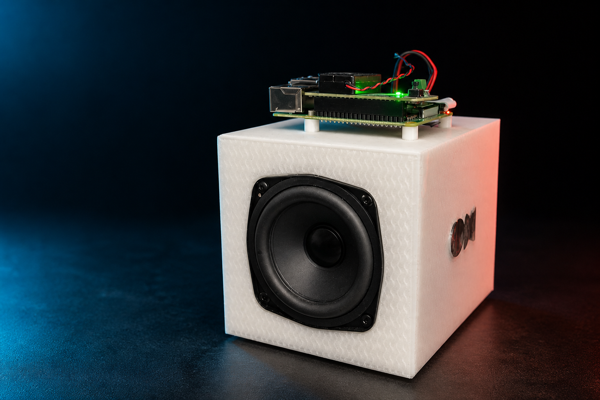

GPT Live
Speech, conversation, explanations, memory in-session, and clock questions.
“Explain that more simply.”
Self-hosted · open source · room tested
Bring GPT Live conversation, OpenAI web search, and optional Codex tools to an OpenHome speaker—without an API key, browser cookie capture, or a screen on the DevKit.
curl -fsSL https://raw.githubusercontent.com/pkyanam/openhome-gpt-live/main/install.sh | bash

“Juniper, search today’s OpenHome news.”
“Here’s what changed today…”
01 / SETUP
The wizard is interactive by default, scriptable for agents, and safe to rerun. Pick the connection you already have—or let it create the missing piece.
curl -fsSL https://raw.githubusercontent.com/pkyanam/openhome-gpt-live/main/install.sh | bashInstall or update the bridge, choose HTTPS, build the Ability, and start only the services your configuration is ready for.
The guided finish step prints the exact Third Party Keys and the shortest dashboard checklist.
Retrieve the DevKit code from the private host inbox and authorize in any trusted browser. No speaker dictation required.
Use Juniper, any voice-name preset, or a custom English name. Every request starts there; ambient room audio stays gated.
02 / ARCHITECTURE
GPT Live stays conversational while the bridge routes current information and local action to the right place.
Speech, conversation, explanations, memory in-session, and clock questions.
News, weather, current facts, and simple web searches—without occupying Codex.
Files, code, projects, OpenHome actions, applications, and computer control.
03 / BUILT FOR REAL ROOMS
Local keyphrase spotting closes after every answer without discarding the Live conversation. A bounded 500 ms wake boundary preserves a no-pause prompt while fresh capture keeps flowing, and a burst circuit breaker stops unattended false-wake loops.
Device-code authorization through Login with ChatGPT. No OpenAI API key and no browser cookie capture.
PipeWire echo cancellation, playback-aware barge-in, and a watchdog that silences the firmware Agent while GPT Live owns audio.
Each wake claims one GPT Live, OpenAI search, or Codex lane. Background work is acknowledged before startup and immediately re-arms the wake gate; media tasks remain deduplicated and bounded.
The speaker handles live audio. Your always-on computer keeps credentials, search, and tools under your control.
04 / VOICES
Speaking voice and wake name are independent. Pick a voice-name preset or enter your own name in the browser control page.
Warm, direct, and ready when you say “Juniper.”
05 / RESILIENT BY DEFAULT
The installer treats an existing speaker as valuable state, not disposable scaffolding.
Secrets, ChatGPT login, pairing, tunnel credentials, and the existing Ability id stay in place.
Configure Codex, OpenHome API automation, Python, or managed tunnels when they add value—not as arbitrary blockers.
The Cloudflare path links to your account, reuses the tunnel on rerun, validates ingress, and starts with the host.
Flags and help menus automate machine work while account, DNS, dashboard, and physical steps remain explicit handoffs.
06 / FAQ
No. Open the host's `/setup` URL in any trusted browser. The DevKit stays headless and handles only speaker audio plus the Local Ability.
No. A phone, tablet, the host computer, or another computer can hold the paired browser session. It is not an OpenHome mobile feature.
No. Login with ChatGPT uses device-code authorization and the connected subscription. This project does not ask for ChatGPT browser cookies.
Only for local files, projects, apps, or computer actions. GPT Live conversation and OpenAI web search can run without Codex.
No. Use an existing stable HTTPS reverse proxy, let the wizard create a persistent named Cloudflare Tunnel, evaluate with a temporary Quick Tunnel, or configure HTTPS later.
Firmware 1.0.8 and 1.1.1 are physically tested. Version 1.1.1 supports automatic capability sync; the guided flow includes the extra bootstrap needed by 1.0.8.
THE SPEAKER IS READY WHEN YOU ARE